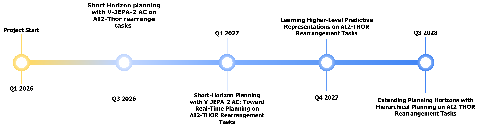

Long-Horizon Real-Time Planning with Hierarchical Joint Embedding Predictive Architectures
World models play an increasingly important role in modern embodied AI (Ha et al., 2018; Hafner et al., 2023; Zhou et al., 2024; Bruce et al., 2025; Assran et al., 2025; Pu et al., 2025). They enable agents to internally predict the consequences of their actions, allowing them to plan and learn policies based on imagined future trajectories. In parallel, driven by recent advances in large-scale self-supervised representation learning—grounded in transformer architectures (Vaswani et al., 2017) and foundation-model pretraining—embodied AI is increasingly adopting general-purpose visual encoders such as DINOv2 (Oquab et al., 2023). These models show promising results on several downstream control tasks and in addressing generalization challenges (Zhou et al., 2024; Assran et al., 2025; Bu et al., 2025). With DINO-WM, Zhou et al., 2024 introduced a world model that combines a pretrained DINOv2 encoder with an action-conditioned predictor. This architecture performs planning directly in the embedding space and demonstrates zero-shot planning capabilities on multiple benchmarks.
Despite these advances, most state-of-the-art models still require labeled interaction data to learn action-conditioned dynamics and control policies (Hafner et al., 2023; Hansen et al., 2023; Zhou et al., 2024; Assran et al., 2025). Since internet-scale action-labeled datasets are scarce and costly to acquire, while raw video is abundant, this reliance on labeled actions limits the scalability of world models compared to purely visual pretraining. Moreover, a truly foundational world model should operate across diverse environments and embodiments. This would require a unified action representation abstracting over embodiment-specific control interfaces, which is often impractical or ill-posed, as action semantics are tightly coupled to physical structure and actuation. As a result, reliance on explicit action labels further limits generalization and transfer (Bu et al., 2025).
In response to these limitations, current work on latent action models learns implicit action representations from observations alone, typically via inverse dynamics. These models encode the changes between consecutive observations into a compact latent action, most often using a VAE- or VQ-VAE–based approach (Kingma et al., 2013; Oord et al., 2017; Bruce et al., 2025; Gao et al., 2025). Such latent actions can then serve as a control interface for downstream tasks, and several works have demonstrated successful planning and policy learning using these representations (Schmidt et al., 2023; Bu et al., 2025; Ye et al., 2024a; Zhang et al., 2024; Gao et al., 2025; Bruce et al., 2025). However, these methods often rely on pixel-space reconstruction losses rather than learning directly in embedding space, and they usually train the latent action model separately from the world model or policy. This separation also means that decoders are discarded during downstream use, disconnecting learned latent actions from the planning and control components (Gao et al., 2025; Bruce et al., 2025). Furthermore, many latent action approaches focus on training policies rather than enabling explicit model-based planning. Once the policy is trained, incorporating new task information usually requires retraining the entire system, whereas learning a dynamics model would allow task optimization at inference time without additional training (Bu et al., 2025; Schmidt et al., 2023; Ye et al., 2024a).
In this thesis, we investigate whether the benefits of pretrained visual embeddings and model- based planning can be combined with latent action learning. Concretely, we build on a publicly available, pretrained visual encoder and propose a variant of DINO-WM that jointly learns a forward dynamics model and an inverse dynamics model directly in the learned embedding space. This design enables pretraining the model without ground-truth action labels while reducing the number of learned components. The forward model predicts future DINO embeddings conditioned on latent actions, while the inverse dynamics model maps pairs of consecutive embeddings to latent actions. Training couples these components so that inferred latent actions are directly optimized for forward prediction. Planning is performed in the latent action space using a CEM optimizer (Rubinstein, 1999). This motivates the central research question of this thesis: Can our proposed latent action version of DINO-WM, trained with joint forward and inverse dynamics, match the planning performance of the original model on the PushT benchmark?
To answer this question, we review inverse dynamics architectures and use the resulting insights to propose our variant of DINO-WM. We then empirically analyze how the introduction of latent actions into the pipeline affects its behavior. In particular, we analyze and compare prediction quality, planning performance, and the effect of actions and latent actions on prediction for our variants relative to the baseline. We additionally evaluate the decodability of the learned latent actions into ground-truth action labels. This thesis is structured as follows. We first provide the scientific background for our approach and review related work and alternative methods. We then introduce our proposed architecture in detail. Next, we describe our experimental setup, covering dataset curation, the chosen benchmark, training and implementation details, and the conducted experiments. We then present and discuss our empirical results. Finally, we summarize the contributions and limitations of our approach and outline promising directions for future work.

Publications and codebases connected to the research direction.